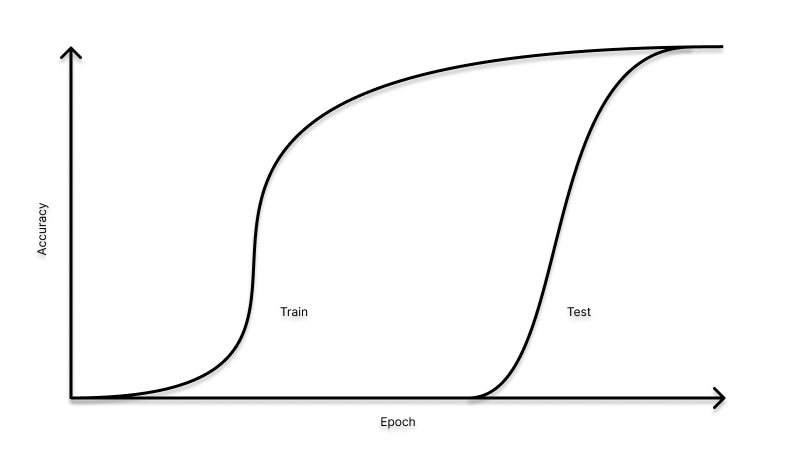

Introduction
Something strange happens when you train a small transformer on modular arithmetic. Within a few hundred steps, training accuracy hits 100%. But validation accuracy sits low, a classic case of overfitting.
Except here, if you keep training, it skyrockets at a certain point. After thousands more steps with no apparent progress, validation accuracy suddenly launches from nearly zero to nearly 100 in what looks almost like a vertical line on the loss curve. The network that spent so long confidently wrong abruptly gets it.
This is grokking, first documented in 2022 by researchers at OpenAI using a two-layer transformer trained on addition followed by modulo division by the prime number 97. What makes it more than a curiosity is the scale: the delay between memorization and generalization spans three orders of magnitude in training steps. No standard account of overfitting predicts this.
That launch in accuracy turns out to be a window into something much deeper: phase transitions in loss landscapes, how circuits form and compete inside networks, and whether the capability jumps we observe in large models are the same phenomenon at scale. This post works through the empirical anatomy, the specific algorithm networks learn, four theoretical lenses from physics and statistics, and what it all implies for how models should be trained and monitored.
In short, grokking is a phase transition, and understanding it changes how you read every loss curve you've ever seen.
The Empirical Anatomy of Grokking
The original grokking paper set up a deceptively simple task: train a small two-layer transformer to compute modular arithmetic. Specifically, given two numbers a and b, predict (a + b) mod 97. The inputs were tokenized equations of the form a ◦ b = c (each character being their own token), the modulus was the prime p = 97, and the optimizer was AdamW with weight decay. This is a pretty straight forward setup, but what came out of it was extremely strange.
The training loss curve, once you know what to look for, breaks cleanly into four acts:
1. Fast memorization. Training accuracy rockets to 100% within a few hundred steps. Validation accuracy stays low, the model has simply memorized the training set.
2. The long plateau. For thousands of steps, sometimes tens of thousands, nothing visible happens. Training loss stays low and validation loss stays high. By any conventional reading, this model is overfit and going nowhere.
3. Abrupt generalization. Validation accuracy suddenly climbs, not gradually, but in a near-vertical jump to near perfect performance.
4. Cleanup. Both losses settle into their final values as the network's weight structure simplifies.
The canyon on the graph between phases 1 and 3 is the grokking gap, and it's the central mystery. If you define it as log₁₀(t_gen / t_mem) the ratio of when generalization happens to when memorization completes, in logarithmic scale, you find it can span three orders of magnitude. The network memorizes in hundreds of steps and generalizes in hundreds of thousands.
So what exactly controls the gap? The single most powerful lever is weight decay. Tuning it correctly can cut the required training data by more than half. Learning rate and optimizer choice matter at the margins. Crucially, training accuracy is never the bottleneck; all the variation lives in how long generalization takes.
There's also a telling signature in the weights themselves: norms grow during memorization, peak during the plateau, then fall below initialization as grokking completes. Generalization and weight shrinkage arrive together, which is a key constraint any good theory has to explain.
Inside the Network
When reverse engineering the algorithm, rather than just watching the loss curve, researchers asked a harder question: what algorithm did the network actually learn? The answer, uncovered through mechanistic interpretability, is surprisingly elegant.
The grokked network solves modular addition using a Fourier-based algorithm built from just a handful of key frequencies (empirically around 5 out of the about 48 possible). Here's the pipeline:
Embedding: Inputs a and b are mapped onto a circle as (cos(ωₖa), sin(ωₖa)) pairs for each key frequency ωₖ.
MLP: The network exploits the trig identity cos(α)cos(β) − sin(α)sin(β) = cos(α+β) to effectively add the two angles, computing a rotation.
Unembedding: The rotated signal constructively interferes so the output logits peak sharply at c* = (a+b) mod 97.
About 84% of MLP neurons are well fit by a single-frequency polynomial, so the circuit is remarkably clean.
Here's the deeper surprise: progress measures like the Gini coefficient on Fourier components reveal that the generalizing circuit forms entirely during the plateau; while validation accuracy is still low. Grokking isn't the network stumbling onto a new solution. It's weight decay quietly erasing the memorization weights until only the efficient Fourier circuit remains.
But why Fourier features specifically? Every maximum-margin solution to modular addition under L₂ regularization necessarily uses Fourier features. Weight decay implicitly pushes toward max-margin solutions, so the Fourier circuit isn't just a solution the network finds, it's actually the solution that weight decay was always steering toward.
Circuit Efficency
At any point during the plateau, the network is running two overlapping circuits simultaneously: C_mem, which memorizes training examples, and C_gen, the Fourier circuit that actually generalizes. Both achieve low training loss, so gradient descent has no immediate reason to prefer one over the other.
What breaks the tie is efficiency under weight decay. Weight decay penalizes parameter magnitude, so the circuit that delivers the same logit confidence with smaller weights wins in the long run. The Fourier circuit is more efficient in exactly this sense. It achieves generalization with lower overall weight norm. Memorization (which needs to store each example separately) just can't compete.
The circuit competition model makes the conditions for grokking precise. You need all three:
1. Both circuits can fit the training data.
2. C_gen is more norm-efficient than C_mem.
3. C_gen is slower to form.
Remove any one of these and grokking disappears. The third condition is why the gap exists at all: the efficient solution takes longer to build, so memorization wins the early race even though it loses the long game.
The Physics of Grokking: Four Theoretical Lenses
All four theories I'm about to present share a common recurring element: a fast timescale fits the training data in an expressive but wrong way, and a much slower timescale carries the network to the generalizing solution. They disagree on what drives the slow mode.
Lens 1 is The Goldilocks Shell. Think of the network's behavior as depending primarily on its total weight norm ‖θ‖. Training loss is flat at small norms and rises at large ones; test loss is U-shaped, with a Goldilocks radius w_c — where generalization is best. Large initialization places the network outside this shell. Weight decay then drives the norm toward w_c exponentially, giving a predicted grokking time of roughly t_grok ≈ ln(w₀/w_c)/γ, which holds empirically across two orders of magnitude in weight decay strength γ. This cleanly explains why grokking on non-algorithmic data requires inflated initialization, you need to start far enough outside the shell.
Lens 2 is The Slingshot. Under Adam without weight decay, the optimizer can develop an instability: as training plateaus, the gradient variance estimate decays, causing the effective step size to balloon. A rare large gradient event then produces an outsized parameter jump (a slingshot) that spikes the loss and reorganizes features, sometimes triggering generalization. This is a real phenomenon, but it's an optimizer artifact specific to Adam. It's neither necessary nor sufficient for grokking in general.
Lens 3 is Lazy to Rich Translation. Early in training, large-initialization networks operate in the lazy (kernel) regime: they fit data by adjusting weights along directions already present at initialization, without learning genuinely new features. Grokking occurs when this lazy solution is misaligned with what the task actually requires, and the network must exit the kernel regime to find the real answer. The timescale for that exit scales with initialization size (bigger init means longer delay). Crucially, this framework predicts grokking even with monotonically increasing weight norms and no weight decay, which directly falsifies purely norm based accounts in those regimes.
Lens 4 is Statistical Mechanics. The statistical mechanics view zooms out furthest. Grokking is a phase transition between two basins in the loss landscape: a high-complexity memorizing phase and a low-complexity generalizing phase. The generalizing solution has higher entropy (more ways to achieve it) but is harder to reach from a random initialization. One camp describes this as a first-order transition with a sharp discontinuity. Another finds no real energy barrier and instead frames grokking as slow relaxation; the network diffuses sluggishly from a low-entropy memorizing state to a higher-entropy generalizing one. There's also a provable result underpinning all of this: for homogeneous networks, early training is biased toward minimum-norm interpolation (memorizing), and late training toward maximum-margin classification (generalizing). Grokking is the transition between these two implicit biases.
So where do these 4 agree? Despite their disagreements, all four lenses point at the same endpoint: a flatter, more norm-efficient, higher-entropy solution that the Fourier circuit analysis describes explicitly. The theories are less rivals than complementary projections of the same underlying geometry.